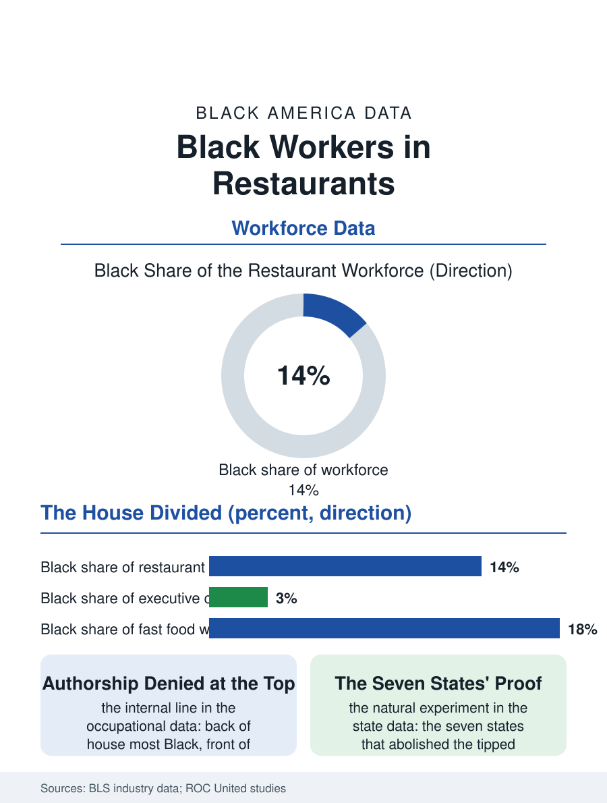

Black Employment
The House Divided: Black Workers in Restaurants
The industry's largest Black workforce, divided by the house's two sides, the tipped wage's genealogy, and a ladder that thins at the name on the door. The restaurant file.

The restaurant industry is the American economy's largest private employer and its most Black at the bottom: Black workers constitute a share of the restaurant workforce above their population share, concentrated in the kitchen and the fast food counter, thin in the dining room's tipped front and the chef's whites, with the industry's wage structure, the tipped minimum's legacy, pricing the distribution. This article reads the restaurant workforce file.
The House's Two Sides
The occupational data draw the industry's internal color line with a clarity few files match: the back of the house, the cooks, the dishwashers, the prep lines, is the industry's most Black and Latino territory, while the front, the servers and bartenders whose tips compose the trade's best hourly earnings, remains disproportionately white in the full-service segment in study after study, a distribution the hiring research attributes to the managers' image judgments and the referral networks, and the customer discrimination literature, the tipping studies' finding that Black servers are tipped less by both races' customers, compounds from the demand side. Fast food, the industry's largest segment, is its most integrated and its most Black by headcount, the counter and the kitchen undifferentiated in the format's design, its wages the file's floor and its workforce the youngest in the service data, the first job of the youth employment file's count. The fine dining tier inverts the whole picture at its peak: the executive chef population's Black share in the low single digits in the culinary profession's data, the James Beard era's slow correction notwithstanding, so that the industry that Black hands built its foundational cuisines upon, the foodways file's whole record, reserves its authorship tier for others in a pattern the food culture's historians have made the industry's standing embarrassment.
The Tipped Wage's Long Shadow
The wage file's center is the tipped minimum wage, the federal subminimum for tipped workers frozen for three decades in the statute, whose genealogy the labor historians trace to the post-emancipation service economy's design, the tip itself having been institutionalized in American service work substantially as the mechanism by which the Pullman and restaurant employers shifted the Black service workforce's wage onto the customer's discretion. The states' divergence gives the file its natural experiment: the seven states that abolished the subminimum pay their tipped workers the full wage, and the outcome data record the racial earnings distribution compressing in those states without the employment collapse the industry's forecasts predicted, the file's clearest policy datum. The scheduling and benefits files attach here in their service forms, the just-in-time schedule and the absent floor of paid sick days in the independent restaurant sector, with the chains' scale providing the formal structures the mom-and-pop's margins cannot, an inversion in which the fast food job's human resources department is the mom-and-pop's absence. The organizing file is the industry's live chapter: the fast food strikes and the Fight for Fifteen, whose workforce and whose demands made the restaurant file a labor movement text, and the union density's slow climb from the industry's floor in the current data.
From the Line to the Name
The restaurant file closes on the mobility ladder the industry actually offers, because beneath the distribution's inequities the kitchen remains one of the economy's true open doors: the dishwasher to the line to the sous chef is a climbable ladder in the real establishments, its rungs skills rather than credentials, and the Black culinary workforce's presence at every rung is the ladder's proof and its indictment in the same view, present everywhere, thinnest at the top where the name goes on the door. The ownership file is the ladder's other exit, the chef-owner of the restaurant business file, and the current era's Black culinary prominence, the celebrated chefs whose restaurants anchor the food culture's present tense, represents the ladder's top finally crowded in the metros where the food media's attention concentrates. The bureau counts the industry's Black workers above a million, the largest single employment file in this section by the private economy's own table. The file's last entry is the kitchen's own accounting: the industry runs on Black hands at its base and its middle, is learning, at the pace the award lists measure, to put the names on the door that the hands have earned since the first American restaurant kitchen was staffed, which is to say since before the Republic's cuisine had a name the hands had not given it.
More in Black Employment
The Black Unemployment Rate: The Two-to-One Pattern
Black unemployment runs at roughly twice the White rate — 5.5 percent against 3.3 percent in annual averages — a ratio stable across five decades of federal data. How it is measured and why it persists.
Black Median Weekly Earnings: The 80-Cent Ratio
Black full-time workers earn a median of about $900 a week — roughly 80 cents for every dollar White workers earn. The BLS earnings data by group, gender, and occupation.
Black Labor Force Participation: Working at National Rates
Black labor force participation runs at roughly the national rate — and Black women participate at higher rates than White women. The BLS participation data.
Source: Bureau of Labor Statistics industry and occupational data; Restaurant Opportunities Centers United workforce studies.